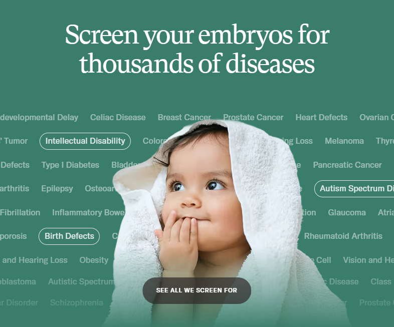
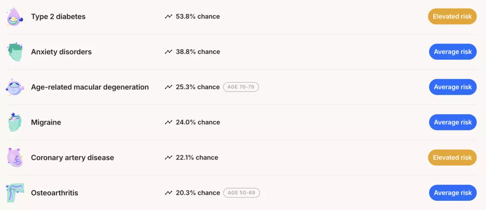
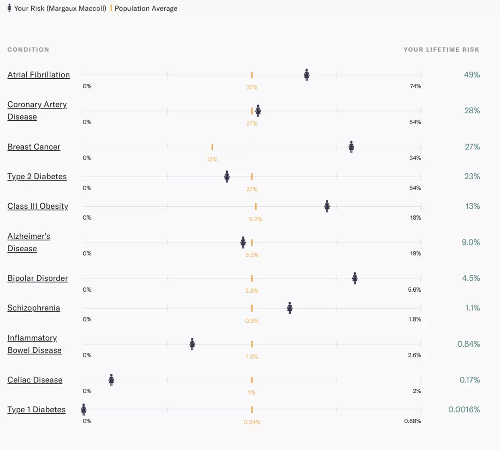
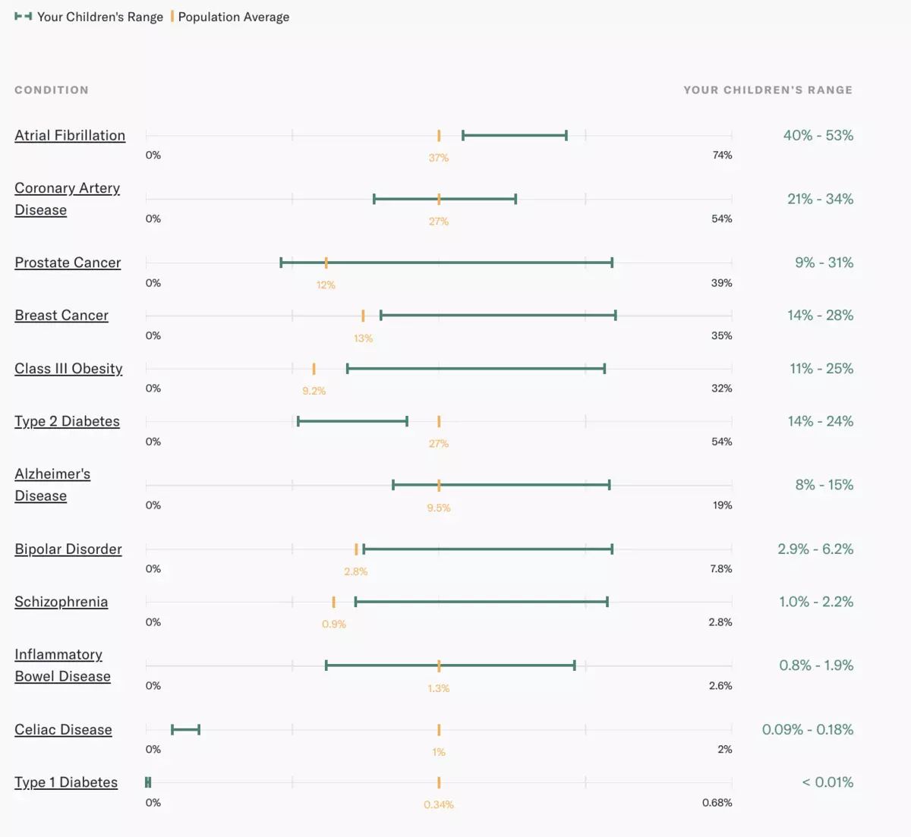

Most people haven’t met a superbaby. I have.
Last year, I attended a cocktail hour at a venture capitalist’s Presidio mansion, filled with founders from his firm’s portfolio companies. As the entrepreneurs lounged on couches, sipping craft cocktails and pitching their wealth management software and AI security systems, conversation suddenly sputtered. The investor’s wife, a startup founder herself, descended the grand white staircase, cradling the night’s real headliner.
“Here’s my superrrrrbabyyy,” the investor cooed, taking the cherubic newborn from his wife’s arms.
The couple had told me weeks earlier that they had given birth to the superbaby using in vitro fertilization and a surrogate. They had screened their embryos with Orchid, a genetic testing startup that charges upward of $2,500 per embryo to test for polygenic conditions — complex diseases caused by the combined effect of many genes, like bipolar disorder or Alzheimer’s. Though the superbaby drooled and babbled like a regular infant, he was as genetically optimized as current science will allow.

Orchid claims that it can sequence over 99% of an embryo's DNA to screen for diseases and genetic disorders. Image courtesy of Orchid.
Polygenic testing startups are Silicon Valley at its most audacious: promising to make future generations healthier and smarter, while inviting deep controversy over the soundness of the science and its potential for harm. Studies have shown that assigning “risk scores” for polygenic diseases is still a crapshoot, the results “random” and “inconsistent,” while critics claim they over-rely on data from people of European descent and offer parents a dangerous illusion of control. Hank Greely, a bioethics and law professor at Stanford University who taught Orchid founder Noor Siddiqui, said polygenic risk scores are “unproven, unprovable, unclear,” and that couples who have used them to select embryos have “wasted money.” He told me his former student Siddiqui was “very smart” but had likely “gotten ahead of her skis.”
In spite of widespread doubts among scientists, over the last five years, tech heavyweights like Anne Wojcicki, Sam Altman, Vitalik Buterin, Elad Gil, and Alexis Ohanian have poured millions into the direct-to-consumer polygenic testing startups Orchid, Nucleus, and Genomic Prediction. It’s a bet on a radical future, one in which, for a few thousand bucks, a biotech company can screen your embryos, comb through your DNA, and assign you and your future child odds on everything from developing a drug addiction to becoming obese. Some even estimate your unborn’s IQ.
Unlike most genetic tests, which screen for single-gene diseases like Tay-Sachs or cystic fibrosis, Orchid — which has rapidly become the go-to testing service for Silicon Valley elites — scans embryos for polygenic diseases like type 2 diabetes and inflammatory bowel disease. Orchid sends parents an online report that estimates the genetic risk of each embryo developing these illnesses.
Parents are left to decide: Which risks can we live with? Which embryos are worth implanting? And which tests are accurate?
Given the celebrities who have vocally lined up behind these services, it’s easy to be skeptical. Elon Musk reportedly used Orchid for at least one of his children. Michael Phelps and longevity extremist Bryan Johnson have both endorsed Nucleus. “Orchid is a categorical change,” Coinbase CEO Brian Armstrong, an investor, said in a quote on the company’s website. “It’s a step towards where we need to go in medicine — away from managing chronic disease, and towards anticipating and preventing it.”
Spoiler alert: @MichaelPhelps is indeed built different. pic.twitter.com/mCkN5RyyAt
— Nucleus Genomics (@nucleusgenomics) May 21, 2025
In the weeks and months after the VC’s house party, I couldn’t stop thinking about their gene-curated superbaby. How many parents in San Francisco would happily experiment with the genetic disposition of their future children? Would these people be willing to hand-select “healthy” embryos even if there wasn’t any regulatory oversight of genetic testing services? And what if the tests weren’t even accurate?
Then, in March, I learned that the genome sequencing startup Nucleus was launching a feature for couples planning to have kids. I reached out to Kian Sadeghi, the 25-year-old founder of Nucleus, who agreed to waive the $798 fee so The Standard could try their initial service, testing individual’s DNA for polygenetic risk. (I later learned that the polygenic family-planning service wasn’t test-ready yet.)
I proposed the plan to my husband: In the name of journalism and science, let’s hand over our DNA to an untested startup and see what Silicon Valley can tell us about our someday children. He reluctantly agreed.
'A total black box'
To understand the murky, revolutionary, and unregulated state of genetic research in the U.S., you have to start in 2003, when the Human Genome Project finished most of its mapping.
Before that, genetic testing was mostly used to search for a single gene mutation known to cause specific diseases (also known as monogenic diseases), like the mutated gene that causes Huntington’s. But with the project’s map of the human genome combined with new sequencing technologies, scientists could conduct massive studies that analyze the DNA of millions of people.
Around 2007, scientists started combing through databases of DNA to identify variants — differences in a DNA sequence — that kept showing up in people with illnesses like schizophrenia and coronary artery disease. Based on how many of these variants a person had, the scientists could assign them a “polygenic risk score” that estimated the genetic risk for the disease.
Since then, scientists have created thousands of polygenic risk scores for other diseases, including type 2 diabetes, breast cancer, and bipolar disorder. A 2018 study found that, in some cases, these scores were nearly as effective at predicting disease as monogenic testing. A high polygenic risk score doesn’t mean you’ll certainly get that disease — environment and lifestyle play major roles — but it does mean that your DNA may put you at higher risk.
Yet the scores remain extremely controversial. Some scientists argue that it will take years before we know with certainty whether these scores can predict disease across a lifetime. One 2023 study from University College London researchers looked at more than 900 polygenic risk scores and found that the tests correctly identified only about 11% of the people who would develop the diseases.
“It is not always transparent how companies are calculating these scores. They claim to have a proprietary algorithm, which, in reality, is a total black box,” Jacob Sherkow, a law professor at the University of Illinois Urbana-Champaign who specializes in bioethics, told the university publication. “If they are not completely accurate, consumers may make adverse health choices on the basis of misinformation.”
Because of the scientific uncertainty, most doctors choose not to test patients’ DNA for polygenic risk scores. But that hasn’t stopped venture-backed startups from putting these scores directly into the hands of consumers. Orchid publicly launched its embryo testing service in late 2023, while Nucleus began whole-genome analysis in 2024. As Nucleus founder Sadeghi told me, doctors have historically treated the patient “like a baby” when it came to extensive genetic testing; these startups would entrust people with their own genetic information.
enter pull quote
Despite my own worries about society sliding down a slippery slope to eugenicism, I was still open to the possibilities of genetic testing. My husband and I are both 27, and our plan has always been to have kids at 30. If we wanted to take the first step toward birthing our own superbaby, we needed to start soon.
My husband, Connor, is a devout Catholic with a beautiful tendency to see every decision through a capital-M moral lens. For him, the idea of using Orchid to determine our baby’s genetics was a severe moral hazard. “This seems like a path toward having no people with Down syndrome, having no people with certain disabilities, even though there are people that have those disabilities that live fulfilling lives,” he said. “You’re talking about culling a tree of human evolution, right?”
However, there are some genetic realities that Connor and I must face. For one, his mother has multiple sclerosis, a debilitating disorder caused by a complicated combination of genetics and environmental factors. Meanwhile, my family has its Irish American streak of alcoholism, and my grandmother suffered from schizophrenia.
Though he wasn’t wild about submitting his DNA to Nucleus, Connor finally acquiesced just in time for the testing kit to arrive. The process was simple: We filled out a brief survey on our families’ medical histories, then swabbed the inside of our cheeks. We put our DNA samples into the vials and sent them off to a lab that would sequence our genomes.
Polygenic testing is seen as a godsend for parents who want "healthly" children, but some scientists doubt its effectiveness. Illustration courtesy of Petra Péterffy for The Washington Post.
After the lab processed our DNA, Nucleus would take the data and run it through its algorithms, searching our genetic codes for variants linked to diseases to determine our polygenic risk scores. This is only a fraction of what the company does: it also tests for monogenic conditions, and particularly high-impact variants, as well as incorporating factors like lifestyle and family history into their risk scores.
Six weeks later, an email from Nucleus arrived: Our results were ready. Sitting in my living room, I hovered my computer mouse over the link. It was like opening a Pandora’s box of ancestral curses. Connor’s mom feared that his results would announce, in flashing red text, that he had inherited her MS.
I was most afraid of what would happen next: If we both scored high-risk for something, what would we decide to do about it when I was ready to get pregnant?
'Simulate your children'
What I did not expect was for my DNA results to look like a Spotify Wrapped. On a yellow background with white text, a Canva-esque slideshow informed me that my risk of type 2 diabetes is a whopping 53.8% — three times the average. I also have an above-average likelihood of developing celiac disease, coronary artery disease, and obsessive-compulsive disorder. I immediately envisioned my flailing future self: diabetic, gluten-free, clutching my chest mid heart attack.
Meanwhile, the test ruled that Connor also had a higher-than-average risk of coronary artery disease and OCD. “At least we’ll have heart attacks together,” he shrugged.
Then, relief: He doesn’t carry the variants most associated with MS. Years of buzzing, restless anxiety briefly stilled.

The author's individual test results from Nucleus. Image courtesy of author.
Nucleus plans to roll out a “genetics-syncing” service for couples that will allow it to “simulate your children” by weighing both parents’ risk scores and predicting what it means for offspring. But that feature isn’t available yet, so I turned to Orchid for a similar test. I emailed Siddiqui, the company’s founder, and asked if she could look over our DNA and tell me something — anything — about what life might have in store for our kids.
She agreed, so I downloaded the raw, unanalyzed genetic data from Nucleus (134 gigabytes) and sent them to Orchid. A few days later, I got an email that our results were ready.
Orchid offers every customer the chance to meet with a genetic counselor, who jumps on a Zoom call with couples as they open their results. (The company did this process for The Standard for free; normally, the pre-IVF family planning feature costs $995.) As I peered at the report with Orchid’s lead genetic counselor, Maria Katz, looking on, I gasped.
“I just don’t understand,” I said. “To me, this feels shocking.”
Both Nucleus and Orchid use proprietary models to assign their risk scores — and Nucleus incorporates more factors into their scores — so I expected the results to be slightly different. But unlike Nucleus’ report, Orchid’s claimed that, based on my genetics, I had a below-average shot at developing type 2 diabetes (23%, versus Nucleus’ claim of 53.8%). And, while Nucleus gave me a 8.6% risk score for breast cancer, Orchid insisted my risk score was over three times higher. Several scores for my husband were dramatically different, too: Nucleus told him he had a 65.6% risk of coronary artery disease; Orchid said 26%.

The author's individual test results from Orchid. Image courtesy of author.
Katz assured me that my confusion (cascading into anger) was “very fair.” But before we dove into the difference in scores, she wanted to show me Connor and my simulated embryo report. Still sharing her screen, Katz opened the Orchid patient portal and moused over to 12 line graphs, one for each polygenic risk score.
Our genes, when simulated together, were, in a word, grim. Our hypothetical child was expected to have a genetic risk of Class III obesity of anywhere from 11% to 25%, compared with the average of 9.2%. If we have a daughter, her inherited genes will give her a 14% to 28% chance of breast cancer. The average is 13%. And I haven’t done our child any favors in the schizophrenia department: The average risk score is 0.9%, but our child would likely have a score from 1% to 2.2%.
In fact, there are only three illnesses that our future kid would likely have a lower-than-average genetic chance of developing: celiac disease, type 1 diabetes, and type 2 diabetes.
When I was growing up, my father admitted to being afraid that my sister and I would abruptly untether from reality, unwitting victims of his genetics. This is what happened to his mother, who suffered from schizophrenia. But with the promise of this new technology, I could pick an embryo with the smallest chance of developing this damaging disorder. I imagined the peace of mind that comes from holding your own superbaby, knowing you did everything in your power to protect it.
But my reverie lasted only a moment, because the results I received from Nucleus and Orchid were so different. What was the point of these scores if they varied so much from company to company? What if the investor and his wife from that Presidio cocktail party had used Nucleus instead of Orchid to select their embryo? Would they have ended up with a completely different superbaby?
“I can’t believe Silicon Valley is allowed to do shit like this,” my husband said when I showed him the divergent scores. “I mean, I can believe it. But come on.”
‘A Silicon Valley guinea pig’
I spent the next few days on the phone with Nucleus and Orchid trying to answer a simple question: Which company should I believe?
Katz, the counselor at Orchid, pointed out that, for many of the medical conditions, the company tested for significantly more variants. For type 2 diabetes, Orchid tested for more than 1.1 million variants; Nucleus, just 171,249. “I would say that I’m not sure if [Nucleus is] providing meaningful scores,” she said.

The green bars show the estimated risk for the author and her husband's simulated children, via Orchid. Image courtesy of author.
But the number of variants alone doesn’t guarantee accuracy. Jerry Lanchbury, a geneticist who has advised both Orchid and Nucleus, told me that in most polygenic models, the first fistful of variants are weighted significantly more than the rest, meaning that testing more than a million variants may not meaningfully improve predictions.
Even if the companies technically tested the same number of variants, they might have totally different datasets. Gabriel Lazaro-Munoz, a neuroscientist and bioethicist who conducts research on the societal impact of genomics, said that these datasets can skew towards certain races, or vary in size of samples — dramatically impacting an individual’s results from company to company.
Then I got on the phone with Nucleus founder Sadeghi. He was unbothered by the discrepancies in my results. He pointed out that, unlike Orchid, his company’s algorithm incorporates our family histories and lifestyles, expanding the polygenic risk score to an overall health score. My gender or body mass index could have raised my score. My husband is a former smoker, which could have increased his risk of coronary artery disease. “From what I can discover so far, they’re very explainable, right?” he reassured me.
But a week later, I got an email from Nucleus. My type 2 diabetes risk score had been adjusted, plummeting from more than 53% to 10.9%. My old score was derived from a 2018 study, the email informed me; the new one was based on a 2022 study and included 1.3 million variants — similar to what Orchid had used. My husband also got an email, saying Nucleus had lowered his risk of coronary artery disease.
The message assured us that our old scores “weren’t wrong,” but that “genetic science is always improving.”
Halle Marchese, Nucleus’s director of marketing, said in a statement that this was a planned update and that “the data we used to build the score improved and, hence, so did our analysis.”
But the timing was so convenient, I couldn’t help but wonder: if I hadn’t been a reporter cross-checking results across multiple services, would I still be working off a supposedly outdated score, going through life thinking I had a sky-high chance at type 2 diabetes? If I were a patient selecting an embryo based on a number derived from the 2018 study, there’d be no rewind button.
enter image carousel
The main reason this behavior is allowed is that, when it comes to genetic testing, the U.S. is still the Wild West. While the U.K. and other countries have largely banned the use of polygenic risk scores in embryo selection, the Food and Drug Administration, the U.S.’s main medical enforcer, has largely chosen not to regulate companies that provide these services. This, despite the agency’s “mounting concern” that the services are misleading consumers, according to the National Human Genome Research Institute.
In late 2023, the FDA approved AvertD, a polygenic testing service that measures the risk of opioid addiction. But, for now, no other polygenic testing company is subject to FDA oversight. This means that every user, and every resulting superbaby, is a Silicon Valley guinea pig.
“This is not 100% pseudoscience”
After having our DNA analyzed twice, and seeing the wild variances in the results from different companies, my husband and I have reached a new agreement: When it comes time to grow our family, we won’t be having a superbaby.
At least not until the FDA begins to regulate the companies providing these opaque, inconsistent, and often unreliable services. For Connor, the process was morally validating. “The scores give the illusion of control,” he shrugged. “I’m just pissed that now two startups have all my genetic data.”
But I felt like I’d lost something. Because I’ve now met children born through this process, I wanted to believe in it — to think there’s something I could do to spare our future kids from MS or schizophrenia. I liked this particular illusion of control.
“What gets me the most is that this is not 100% pseudoscience,” I told Connor. “It is coming from picking up patterns in DNA. The patterns might not ultimately mean anything, but the patterns are there.”
Imagine, 10 years from now, when there’s more research and consensus around which scores are accurate. “And all the rich people have healthier, non-schizophrenic kids,” I said. “That’s not fair.”
He kissed me. “It’s not fair,” he said. “But I don’t really want to play god anyway.”
I sighed. “But I kinda do.”